Префектура Окаяма · Кодзима · отель
Деним и море: хостел в Кодзиме, где ночуют в джинсовом номере
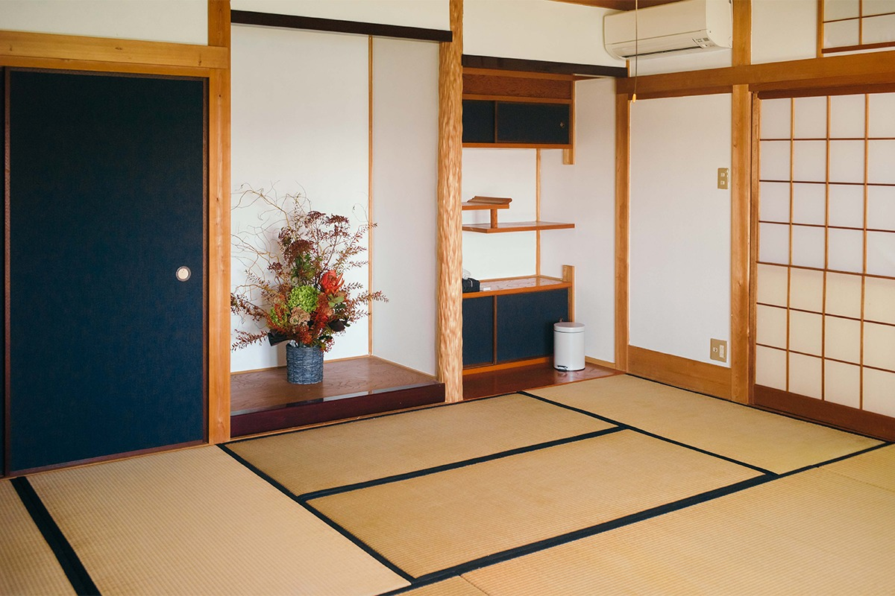
В Кодзиме, на берегу Внутреннего Японского моря, местные производители денима построили хостел, где джинсовой тканью обиты стены, татами и диваны. Из окон видно мост Сэто-Охаси, а ночевать здесь можно почти над самым пляжем.
Место
Дом, который «думает» о море
В Кодзиме, районе Курасики, стоит комплекс из хостела, магазина одежды и кафе. Отсюда открывается вид на острова Внутреннего моря, который здесь называют «красотой множества островов». Название float авторы объясняют так: это место, где можно думать и представлять.
Раньше у братьев, основавших бренд, не было магазина: они ездили по всем сорока семи префектурам Японии и продавали одежду с колёс. В сентябре 2019 года они открыли «DENIM HOSTEL float» в Кодзиме, известном как родина японских джинсов. Бренд шьёт деним, поэтому тканью здесь отделано буквально всё.
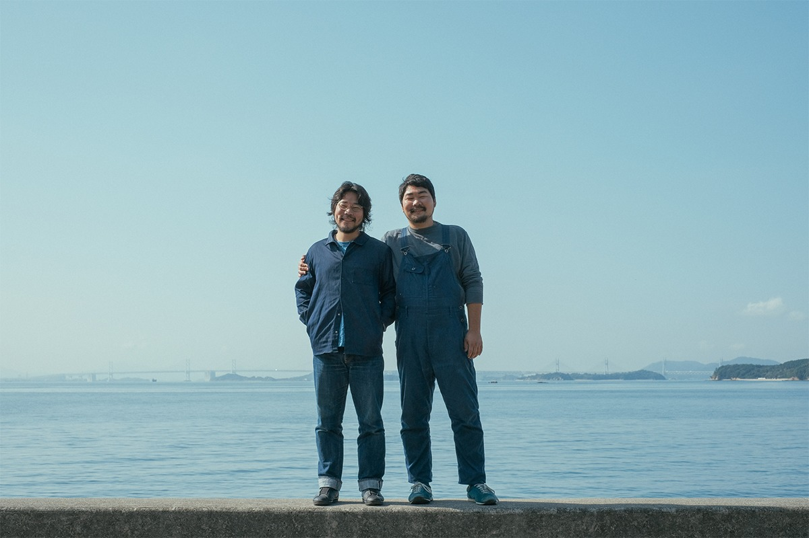
Номера
Три оттенка синего
В хостеле есть отдельные номера и дормитории. Стены, кромка татами, диваны и подушки для сидения обиты денимом, так что из окна видны сразу два разных синих цвета: море и ткань.
Номеров три типа. «Ханада» смотрит на Внутреннее море, и его главный цвет это густой синий, который по-японски и называется «ханада». В основе «Асаги» лежит светлый оттенок «асаги». «Аканэ» повторяет цвет заката и отличается верандой-энгава.
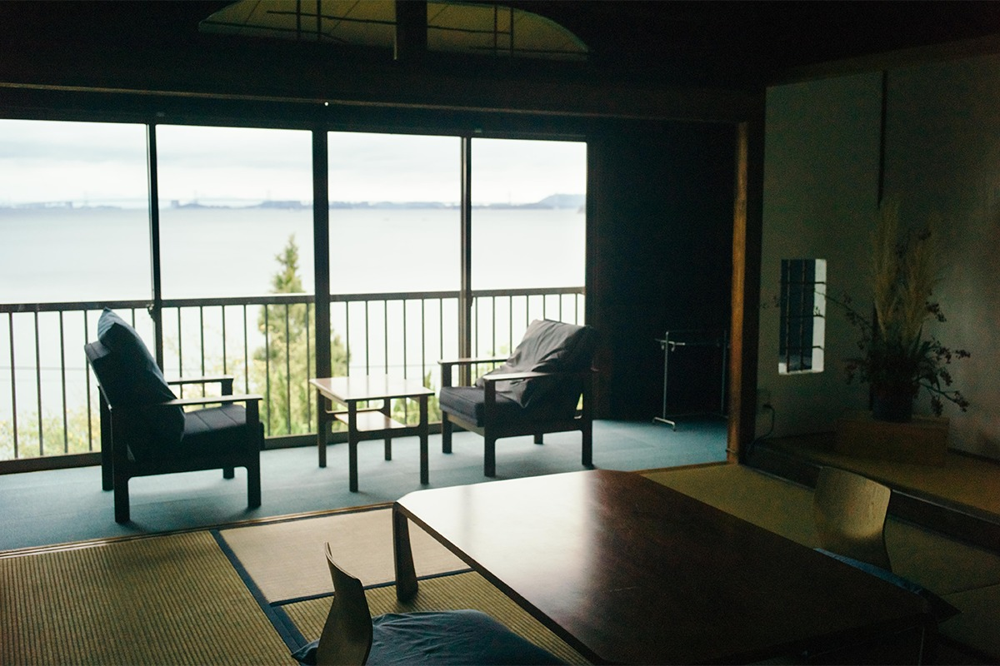
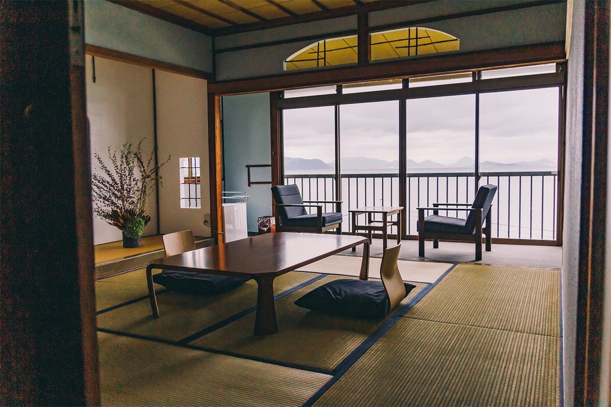
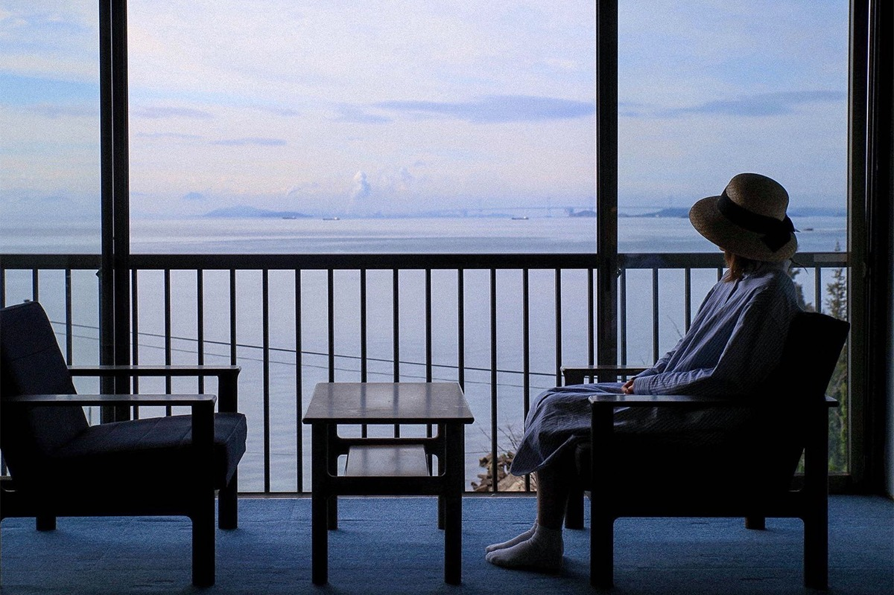
В общей ванной три душа и большой чан. Шампунь и кондиционер здесь от марки LEAF&BOTANICS, а мыло от осакской фирмы «Кимура сэккэн», сделанное без химии.
Магазин
Деним во всех видах
Внутри работает фирменный магазин бренда. Кроме джинсов, здесь есть платья и рубашки из льняного денима. Можно заказать любую вещь бренда, а на полках стоят органические полотенца «Икэути органик» из Имабари и натуральное мыло «Кимура сэккэн», сваренное в котле.
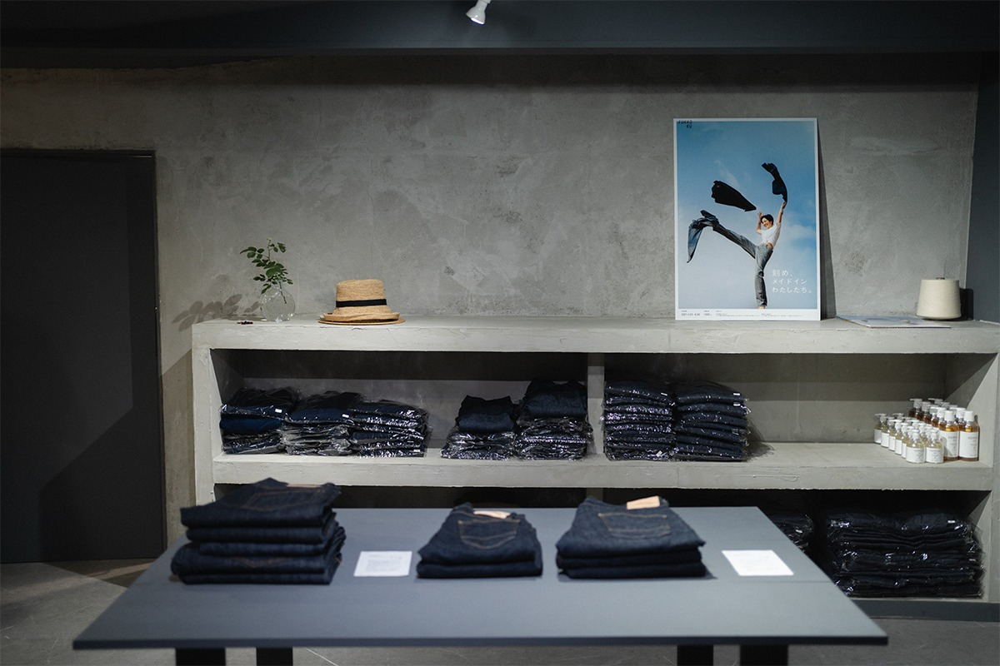
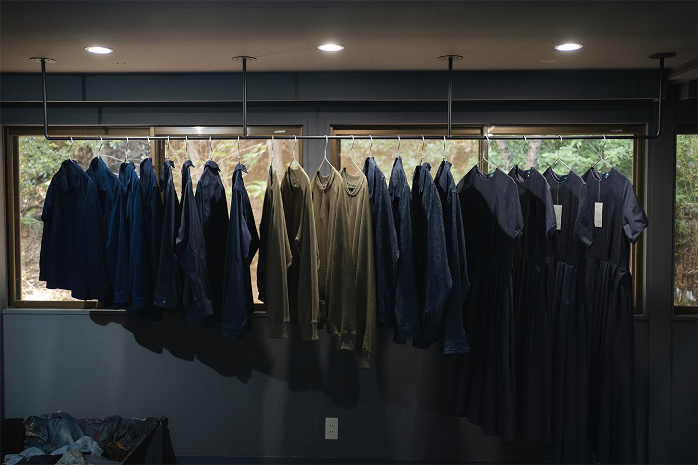
Отдельная услуга называется «фукуэн». Старую одежду, которая пылилась в шкафу, здесь перекрашивают в индиго и возвращают хозяину. Всё делают вручную. Если выбрать этот план при бронировании, можно покрасить принесённую вещь самому.
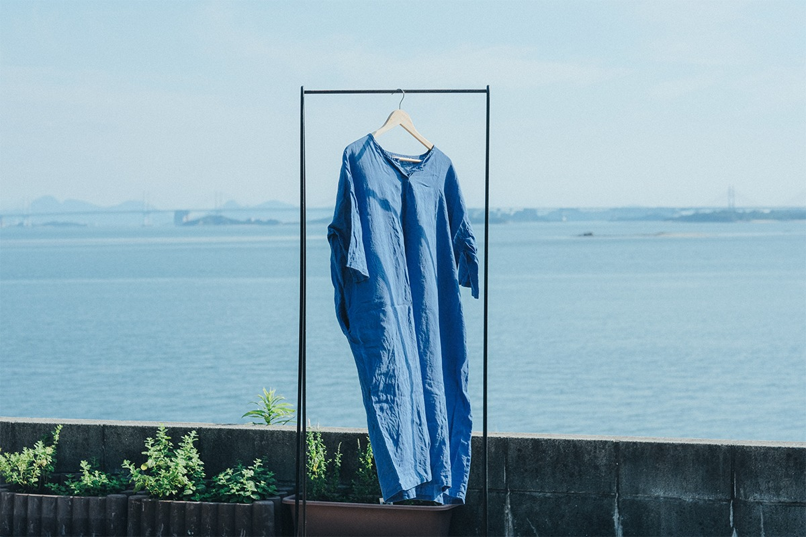
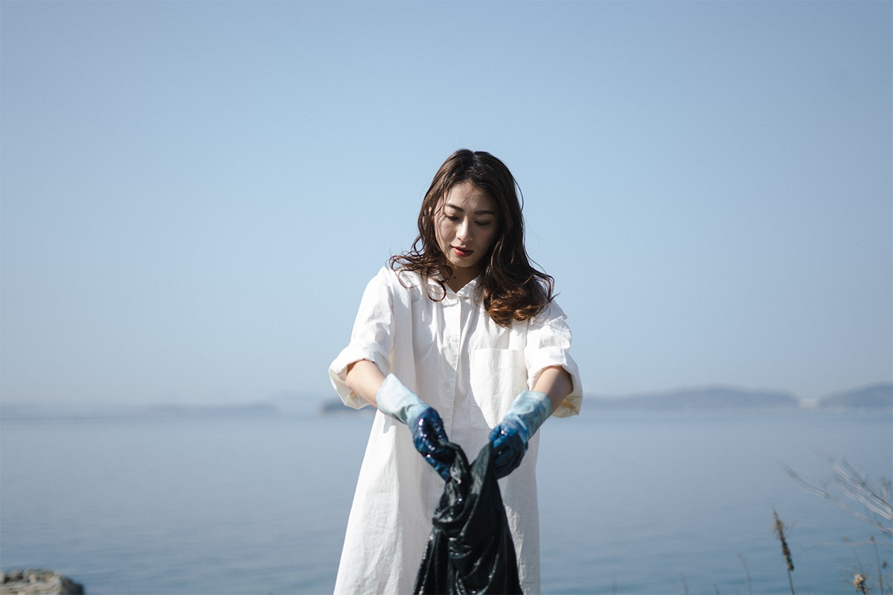
Кафе
Карри из одиннадцати специй
В кафе готовят из продуктов тех фермеров, с которыми братья познакомились в поездках. Здесь подают карри из смеси одиннадцати специй, фирменный флоат и напитки. Вечером появляются натуральное вино, крафтовое пиво и местное сакэ.
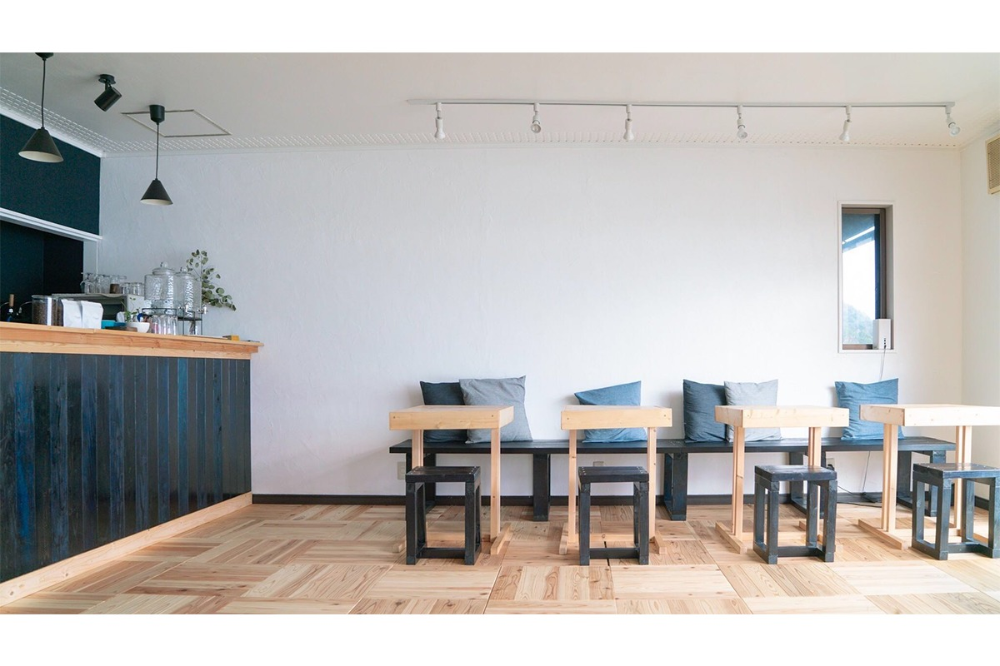
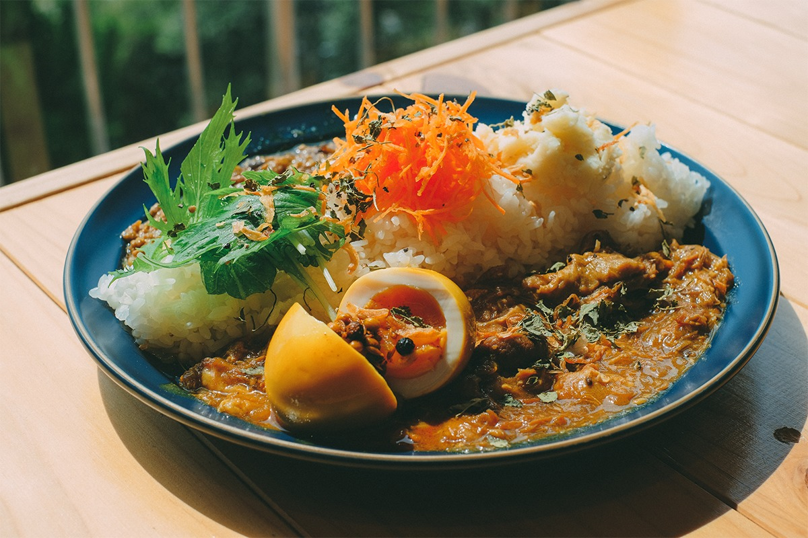
Чтение
«Мадороми бунко»
Хостел ведёт книжный проект, который даёт время на тишину и воображение. По субботам с 9:00 до 12:00 открывается онлайн-читальня «Библиотека у моря»: читать здесь можно, глядя на острова.
Активности
Гора Одзигатакэ
Рядом не только море, но и горы. Над территорией национального парка поднимается гора Одзигатакэ. По выходным, если повезёт, отсюда летают на параплане. Можно взять напрокат доску с веслом и гриль, подняться на вершину за пятьдесят минут и отдохнуть в кафе наверху.
DENIM HOSTEL float
- Адрес
- префектура Окаяма, Курасики, Кодзима Каракото, 1421-26
- Телефон
- +81 86-477-7620
- Заезд
- 16:00–21:00
- Выезд
- 10:00